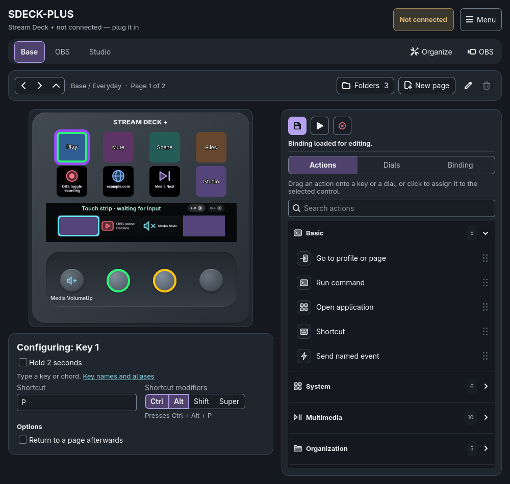
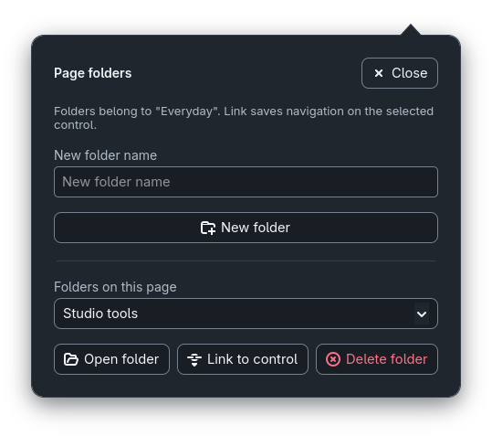
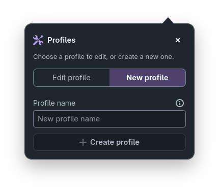
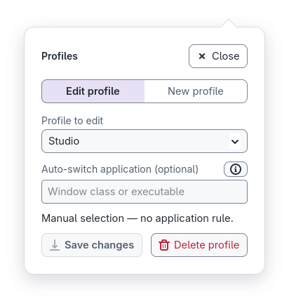
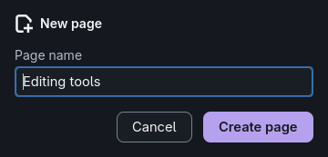
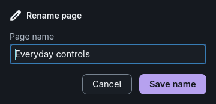

Every control
8 keys with optional exclusive two-second hold actions, 4 dials with press and rotation, and touch-strip tap, hold, flick and swipes.
- Key press
- Dial press
- Clockwise
- Counterclockwise
- Tap
- Hold
- Flick
- Swipes
Linux · GTK4 · Rust
sdeck-plus is a GTK4 control desk for the Elgato Stream Deck + (Stream Deck Plus). Configure its eight keys, four dials and touch strip, organize profiles, pages and folders, show live information, route audio, style button text and drive OBS Studio.
This project is still under construction. Developed and tested on Arch Linux with Hyprland.
Interactive preview
Try the controls
Hover, focus or click a key, dial or touch section to see what it can do. Click a dial to turn it; swipe the strip or use its arrows to change touch page.
Arrow keys move between controls. Readings are demonstration values.
At a glance
Elgato's own software does not run on Linux. sdeck-plus is a native, local application for every control of the Stream Deck +, with no account, cloud service or system-wide changes required.
8 keys with optional exclusive two-second hold actions, 4 dials with press and rotation, and touch-strip tap, hold, flick and swipes.
Profile tabs with pages and folders, switched automatically by the focused application.
Images for keys, the strip and touch zones, styled text on each key, and an action icon on keys and zones without artwork.
Volume, audio output, time, weather, CPU, memory, temperature, device brightness, OBS state and now playing, updated on the device.
Bindings stay active with the window closed, with optional start at login.
Switch scenes, toggle recording and streaming, mute inputs and show or hide sources over the local WebSocket server.
Following the desktop, with a violet primary action and a cyan keyboard-focus outline.
One .sdeck-plus.json export holds profiles, pages, bindings, button text, sounds, information and OBS settings. Import validates first and keeps a backup.
Features
Current native GTK widgets with demonstration profiles and artwork. Input feedback and readings are deterministic examples; no device, audio-output or OBS actions are performed for these captures.
01 · Bindings
Search the Actions catalog and drag an action onto a key or dial, or select a control and click an action. Ready-to-use actions save immediately; actions needing settings remain drafts until you save. Saving never runs an action.
02 · Defaults
New buttons, profiles and pages start without an action. None can still display artwork, button text or live information, but it never runs an action or starts a page-return timer.
03 · Dials and strip
Each dial has independent Press, Clockwise and Counterclockwise bindings, perfect for volume or brightness. Drop any catalog action on a dial and choose its event, or use the Dials tab for Volume, Brightness, Tracks, Scroll and Pages presets. Presets replace only the events they list, without executing them. The touch strip binds tap, hold, flick and directional swipes.
Touchscreen settings, images and dial press/turn assignments follow the profile's selected touch page, independently of keypad pages and folders. Existing touch pages receive their profile's main-page dials on upgrade, without replacing touch edits or discarding legacy records. Select the strip to add, choose or delete a Touch page. Swiping left shows the next touch page and swiping right the previous one by default; assign any action to a swipe to override it. Left/right edge indicators show available previous/next touch pages, including over section images and live information; unavailable directions are hidden. Existing configurations and swipe assignments are preserved. The app always starts on the Base profile's first page.
04 · Extended actions
Expand a category in the searchable Actions catalog: System, Multimedia, Organization, Device or OBS. Each action shows only its own fields and a short description. Keys use the catalog; dials and the strip also retain event and action selectors.
05 · Audio
More actions > Multimedia > Change audio output can select a fixed PipeWire output or Rotate through connected outputs on each press. Saved fixed targets use stable names, not temporary numeric IDs. Choosing or saving never changes audio.
06 · Live information
Show volume, output device, brightness, time and date, weather, CPU, memory, temperature, OBS state or the media now playing. Readings update on keys and eligible dial or touch-section bindings, over their own artwork. None can show information without running an action.
Choose live information in the Binding tab. Weather accepts a city or coordinates and needs an internet connection. The readings below are demonstration values.
07 · Button text
Right-click a key and choose Edit text and image… (or Add text and image… for an undecorated key). Draw text with an installed font, a size from 6 to 120 px, horizontal or vertical orientation and a position on a 3x3 grid, with tooltips and keyboard focus. The popup names the key and page being edited, and its preview shows the key exactly as the device will.
08 · Artwork
Assign PNG, GIF or any image supported by GdkPixbuf to thirteen targets: eight keys, the touch-strip background and four touch zones. Right-click a key to edit its image and text together; touch targets retain their Appearance section. Images are copied into the app's data directory and replayed on reconnect.
09 · Organization
Each profile is a tab with its own pages, folders, bindings and artwork. Associate a profile with a window class or executable and it is selected automatically when that application gets focus (Hyprland IPC).
10 · Timers
Start timer shows the time left on the key that started it: hh:mm from one hour, mm:ss below, with the units above the digits.
It ends with a system notification and a chime. While one runs, another start is ignored.
Give a key an optional Hold 2 seconds action, such as Cancel timer: a short tap runs the short action, two seconds runs only the hold action.
10 · Timers
Enable a delayed return on a non-None binding, choose the exact page and set a delay from 1 to 86400 seconds. Activating that binding again restarts the wait. Saving a binding never starts the timer.
11 · Backup
The top-right Menu imports and exports .sdeck-plus.json files containing
saved profiles, pages, bindings, button text, file references, information and OBS settings.
Version 4 exports readable configuration without base64: ./sonidos/cancionX.mp3, ./imagenes/name.png and ./archivos/name replace original file locations.
No background-image, sound or other file contents, nor symlink destinations, travel with the export. Import preserves local files and lets you reconnect missing references on the destination machine.
Older version-1, version-2 and version-3 exports remain supported.
Exports include saved OBS credentials. Keep them private. Cancel or an invalid file leaves the current configuration intact.
12 · Themes
The native controls follow the desktop theme while keeping consistent spacing, a violet primary action and a distinct cyan keyboard-focus outline.
13 · OBS
Connect to OBS's built-in WebSocket server on a local endpoint. Switch scenes, toggle recording or streaming, mute inputs and show or hide sources. The connection test only queries state; it never starts an output.
14 · Help
Choose Menu > Help for the three-step guide: select a control, configure an action, then save or test it.
Files · Availability
Sounds and file/folder targets with absolute paths are saved through app-owned symbolic links. The editor shows the original path; images remain copied.
If a target disappears, a red cross replaces its image and stays visible behind button text when the control is redrawn. Live information still takes priority. Exports contain only relative references in sonidos, imagenes and archivos; no file contents or original parent paths.
Gallery
Every capture comes from the production widgets. Select any screenshot on this page to enlarge it; use the arrow keys to move through them.






Actions
Beyond layers, commands, applications, shortcuts and sounds, More actions provides the categories below.
The Action menu offers layer and page switching, shell commands, launching applications, keyboard shortcuts, named events, the categorized More actions, Play sound and None.
Alternate two shortcuts, paste Unicode text with optional Enter, open files, folders or websites, close a process, scroll the mouse wheel.
Play/pause, stop, next/previous track, PipeWire volume up/down and mute, fixed or rotating audio output, play a local audio file, stop soundboard playback.
Next, previous or specific keypad page, enter a child folder, return to the parent; touch controls also offer next and previous touchscreen page.
Absolute or relative brightness, sleep and wake, countdown timers with system notifications and a theme alarm on completion, even while the window is hidden. The chime uses optional canberra-gtk-play; if unavailable, the GTK bell is attempted and may be silent.
Select a scene, toggle recording or streaming, toggle input mute, show/hide a source.
Install
Builds from source with Cargo and installs for the current user only. It never installs system packages or changes device permissions.
pkg-config, glib-compile-resources, GTK 4.8 or newer and libudev development files.~/.local; no root, no autostart, nothing launched. Remove it with ./install.sh --uninstall.sudo pacman -S gtk4 base-devel
git clone https://github.com/aldosilvestre/sdeck-plus.git
cd sdeck-plus
./install.shOr run it directly from the checkout with cargo run.
Documentation
How each part of the application behaves, where it stores its data and what it needs from the system, plus checks and tools for working on sdeck-plus.
Free and open source under the MIT license. It runs in the tray, keeps working with its window closed and never installs packages or changes permissions on its own.